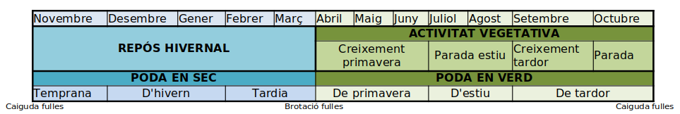

La poda realizada en el periodo de reposo de la planta (entre la caída de las hojas y la brotación de las nuevas) se denomina poda en seco. Aproximadamente (y dependiendo del año) va desde primeros de noviembre a mitad de marzo. Dentro de ella diferenciamos 3 periodos: poda temprana
(de noviembre a la primera mitad de diciembre), poda de invierno y poda tardía (desde finales de enero hasta la brotación).
Si la poda se hace durante el periodo de actividad vegetativa (desde marzo hasta noviembre), hablamos de poda en verde. Como en el caso anterior, hay
3 clases de poda en verde: la poda de primavera, correspondiendo al crecimiento primaveral (marzo-junio), la poda de verano, que coincide con la parada estival (julio-agosto), y la poda de otoño (septiembre-octubre).

Los efectos de la poda son diferentes según la época en que se hace. Por lo tanto, es importante elegir bien la época de poda para minimizar sus
inconvenientes y potenciar sus ventajas. Los principales inconvenientes son:
- Se elimina una parte de la copa con las reservas que contiene. Por lo tanto, debilita la planta.
- Cualquier corte origina una herida. La respuesta de la planta es un proceso de cicatrización en el que, además de su fisiología, influyen las condiciones ambientales (temperatura, humedad, iluminación, etc.)
- Los cortes de poda dejan al descubierto madera que estaba protegida de la intemperie. Hasta que cicatriza, los agentes externos como heladas, hongos, insolación, etc. pueden afectar a la madera y originar su muerte y podredumbre. Hay que tener especial atención a las heladas, los hongos y los sangrados.
- En especies caducifolias, durante la poda en seco podemos apreciar bien la estructura de la planta y valorar qué tenemos que podar. En cambio, durante la poda en verde resulta más difícil valorar la poda de la planta, porque las hojas dificultan ver la estructura.
- Salvo algunos casos, la presencia de flores o frutos limita la poda, y obliga a podar entre la recolección y la siguiente floración.
- Los días de poda disponibles variarán en función del tiempo atmosférico. Resulta imposible podar en días de lluvia o viento, cuando el suelo está embarrado, etc. Por lo tanto, los días disponibles para podar limitarán nuestras posibilidades.
En la siguiente tabla se valora cada uno de estos aspectos en función de la época del año: